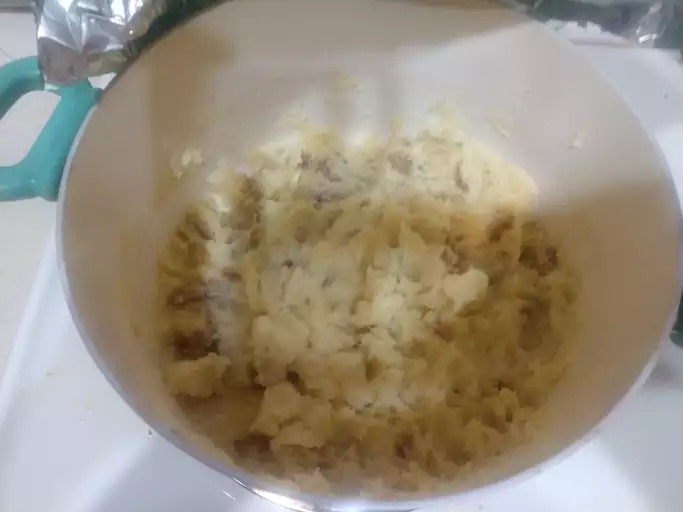

Mashed Potato Receipe

This mashed potato recipe is perfect if you're looking for good, old-fashioned mashed potatoes.
Made with just potatoes, milk, butter, and optional garlic, this go-to recipe makes a classic holiday dish.
Learn how to make mashed potatoes that come out smooth, creamy, and delicious every time!
Serve with gravy or extra butter on top.
Ingrediants:
2 pounds baking potatoes, peeled and quartered
3 cloves garlic, peeled, or to taste (Optional)
1 cup milk
2 tablespoons butter
salt and ground black pepper to taste
Steps to make Mashed Potato:
Gather all ingredients.
Boil Potato
When the potatoes are almost finished, heat milk and butter in a small saucepan over low heat until butter is melted
Drain potatoes and return to the pot. Slowly add warm milk mixture, blending it in with a potato masher or electric mixer until potatoes are smooth and creamy.
Season with salt and pepper. Serve and enjoy!